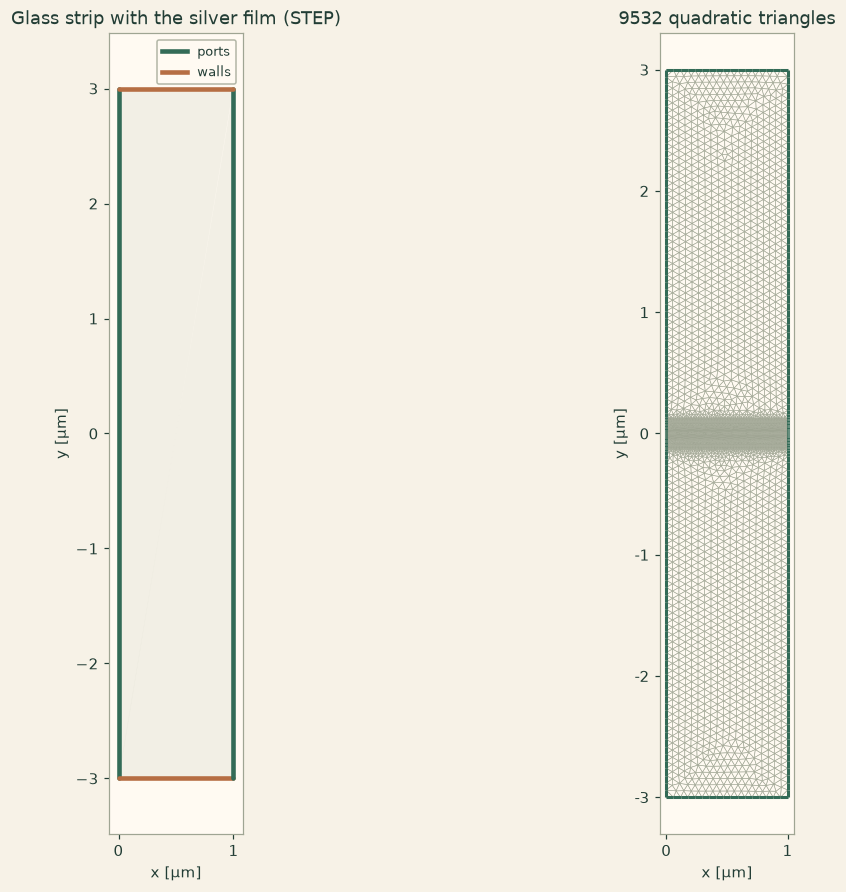

Docs › Examples › Surface plasmons of a thin silver film in glass
Plasmonics, waveguide modes · 2D
Surface plasmons of a thin silver film in glass
A 40 nm silver film in glass carries a long-range and a short-range surface plasmon; their dispersion and propagation length are computed from 1.2 to 3.2 eV.

What it computes
OneSimulation solves the magnetic field of a two-dimensional section of the film read from STEP files drawn in micrometres (the mesh is scaled to metres, the model solved in SI units), with silver as a Drude-Lorentz metal; the waveguide ports compute the modes of their line through glass, silver and glass and return the complex propagation constants. A driven strip checks the damping through the transmitted power. The script that builds the STEP files comes with the notebook.
What it checks
Against the exact dispersion relation of the film the effective index agrees to 1.4e-5 (long-range) and 3.1e-4 (short-range) over 21 photon energies, the propagation length to 2.5e-3 and 1.2e-4 relative (e.g. 153.1 um against 152.8 um at 1.2 eV); the transmitted power over 1 um matches exp(-2 Im(beta) L) to 1.6e-3.
Geometry
The notebook starts at the import of the CAD files thin_film_surface_plasmon_dispersion.step, thin_film_surface_plasmon_dispersion_band.step, thin_film_surface_plasmon_dispersion_film.step: STEP (AP242), readable by any CAD program, with the names of the faces that the boundary conditions use. Put them next to the notebook.

The geometry script
The script thin_film_surface_plasmon_dispersion_geometry.py builds the geometry with the CAD objects of OneSimulation and writes the files. Change a dimension there, run it, and run the notebook again.
"""Geometry of the OneSimulation example "Surface plasmons of a thin silver film in glass".
Builds, as thin plates with the CAD objects of OneSimulation and in micrometres, a strip of glass
1 um long and 6 um high (thin_film_surface_plasmon_dispersion.step; x_min and x_max are the
waveguide ports, y_min and y_max the far walls of the cladding), the 40 nm silver film along its
middle (thin_film_surface_plasmon_dispersion_film.step) and a 240 nm band of glass around the film
that is meshed finely (thin_film_surface_plasmon_dispersion_band.step).
"""
from onesim.cad.d3 import Box
length, height, film, band, depth = 1.0, 6.0, 0.04, 0.24, 0.1
Box(length=length, width=height, height=depth, origin=(0, -height / 2, 0)).save(
"thin_film_surface_plasmon_dispersion.step"
)
Box(length=length, width=film, height=depth, origin=(0, -film / 2, 0)).save(
"thin_film_surface_plasmon_dispersion_film.step"
)
Box(length=length, width=band, height=depth, origin=(0, -band / 2, 0)).save(
"thin_film_surface_plasmon_dispersion_band.step"
)The notebook
The complete notebook, cell by cell. Run it to produce the figures and the comparison printout.
On a single metal-dielectric interface a surface plasmon polariton is bound with the propagation constant \(\beta=k_0\sqrt{\varepsilon_m\varepsilon_d/(\varepsilon_m+\varepsilon_d)}\). A film of thickness \(t\) has two interfaces; when \(t\) is comparable with the decay length in the metal (\(\approx 25\) nm) the two plasmons couple into a mode of even and a mode of odd magnetic field \(H_z(y)\). One of them keeps most of its field in the glass: it is the long-range plasmon, which travels hundreds of micrometres in the near infrared. The other concentrates its field in the metal: the short-range plasmon, with a larger index and much stronger damping.
Silver is described by the Drude-Lorentz model of Rakić et al. (free electrons with plasma energy \(\hbar\omega_p=9.01\) eV, oscillator strength \(f_0=0.845\), damping \(\hbar\Gamma_0=0.048\) eV, and five interband oscillators), the glass by \(\varepsilon_d=2.25\):
The plasmons are TM waves; the section solves the out-of-plane magnetic field \(H_z\) with FrequencyDomainMaxwell. A SectionWaveguidePort computes the modes of its port line with the material along it - glass, silver, glass - and absorbs them; port_modes returns their complex propagation constants \(\beta\), and the propagation length is \(L_p=1/(2\,\mathrm{Im}\,\beta)\).
| boundary | condition | |---|---| | x_min | waveguide port, two modes, one of them fed with 1 W/m | | x_max | waveguide port, two modes | | y_min, y_max (3 um from the film) | perfect electric conductor |
Reference (E. N. Economou, Phys. Rev. 182, 539 (1969); S. A. Maier, Plasmonics: Fundamentals and Applications, Springer 2007, §2.3; A. D. Rakić et al., Appl. Opt. 37, 5271 (1998)). With \(\kappa_i=\sqrt{\beta^2-\varepsilon_ik_0^2}\) the bound TM modes of the film satisfy
solved here for complex \(\beta\) at each photon energy with the same permittivity.
The STEP parts are drawn in micrometres, the unit that suits a film of 40 nm; scaled brings the mesh to metres, so the model is solved in SI units and the plots show micrometres again.
import numpy as np
from onesim.cad.exchange import load
from onesim.materials import VACUUM_PERMEABILITY, VACUUM_PERMITTIVITY
from onesim.materials.electromagnetic import (
DrudeLorentzElectromagneticMaterial,
IsotropicElectromagneticMaterial,
LorentzOscillator,
RegionwiseElectromagneticMaterial,
electronvolts_to_angular_frequency,
)
from onesim.meshing import TriangularMesher, scaled
from onesim.numerics import Numerics
from onesim.numerics.fem import FiniteElement, Lagrange
from onesim.numerics.linear import ComplexSparseDirect
from onesim.physics.electromagnetics import (
FrequencyDomainMaxwell,
PerfectElectricConductor,
SectionWaveguidePort,
port_modes,
scattering_parameters,
)
from onesim.simulation import Problem, Simulation
from onesim.visualization import plots, theme
from scipy.optimize import newton
theme.set()
glass, thickness = 2.25, 40e-9
light = 1 / np.sqrt(VACUUM_PERMEABILITY * VACUUM_PERMITTIVITY)
plasma, oscillators = 9.01, [
(0.065, 3.886, 0.816),
(0.124, 0.452, 4.481),
(0.011, 0.065, 8.185),
(0.840, 0.916, 9.083),
(5.646, 2.419, 20.29),
]
silver = DrudeLorentzElectromagneticMaterial(
plasma_frequency=electronvolts_to_angular_frequency(np.sqrt(0.845) * plasma),
collision_rate=electronvolts_to_angular_frequency(0.048),
oscillators=tuple(
LorentzOscillator(
strength=f * plasma**2 / w**2,
resonance_frequency=electronvolts_to_angular_frequency(w),
damping=electronvolts_to_angular_frequency(g),
)
for f, g, w in oscillators
),
)Geometry and mesh
load reads the glass strip, the film and a thin band around the film; section cuts them at half thickness. Quadratic triangles of 8 nm in the film, 12 nm in the band and 60 nm in the rest of the glass follow the field of both plasmons, which decays within 20 to 700 nm from the film; scaled(..., "um") turns the micrometres of the drawing into metres.
parts = {
name: load(f"thin_film_surface_plasmon_dispersion{name}.step")
for name in ("", "_band", "_film")
}
strip = parts[""].section((0, 0, 1), origin=(0, 0, 0.05))
band = parts["_band"].section((0, 0, 1), origin=(0, 0, 0.05)).named("band")
film = parts["_film"].section((0, 0, 1), origin=(0, 0, 0.05)).named("film")
sides = strip.boundaries
mesh = scaled(
TriangularMesher(
target_size=0.06,
embedded_regions=(band, film),
region_sizes={"band": 0.012, "film": 0.008},
).generate(strip),
"um",
)
fig = plots.figure(1, 2, size=(10, 8))
plots.geometry(
strip,
selection={"ports": sides.x_min | sides.x_max, "walls": sides.y_min | sides.y_max},
labels=False,
title="Glass strip with the silver film (STEP)",
length_unit="um",
drawing_unit="um",
ax=fig[0],
)
plots.mesh(
mesh,
groups=("all",),
legend=False,
title=f"{mesh.cell_count} quadratic triangles",
length_unit="um",
ax=fig[1],
)
plots.show()Model
One FrequencyDomainMaxwell model per photon energy solves \(H_z\) (polarization Hz) with the silver in the film and glass elsewhere. Each port keeps two modes - the two plasmons, whose indices exceed that of the glass - and the first port feeds one of them.
material = RegionwiseElectromagneticMaterial(
{"film": silver},
default=IsotropicElectromagneticMaterial(relative_permittivity=glass),
)
numerics = Numerics(
spatial=FiniteElement(element=Lagrange(order=2)),
linear_solver=ComplexSparseDirect(),
)
model = lambda energy: FrequencyDomainMaxwell(
domain=strip.domain(),
frequency=electronvolts_to_angular_frequency(energy) / (2 * np.pi),
material=material,
polarization="Hz",
phasor_convention="exp(-i*omega*t)",
amplitude_convention="peak",
)
solve = lambda physics, mode=0: Simulation(
problem=Problem(
name="silver film",
geometry=strip,
physics=(physics,),
boundary_conditions=(
SectionWaveguidePort(
physics=physics,
boundary=sides.x_min,
modes=2,
incident_mode=mode,
incident_power=1.0,
),
SectionWaveguidePort(physics=physics, boundary=sides.x_max, modes=2),
PerfectElectricConductor(
physics=physics, boundary=sides.y_min | sides.y_max
),
),
),
mesh=mesh,
numerics=numerics,
).solve_stationary()
energies = np.linspace(1.2, 3.2, 21)
models = [model(energy) for energy in energies]
results = [solve(physics) for physics in models]
computed = np.array(
[
port_modes(result, physics)[0]["propagation_constant"]
for result, physics in zip(results, models)
]
)Results
The exact constants come from the two dispersion relations, solved by Newton's method from the single-interface plasmon. \(k_0\) and \(\beta\) are in rad/m, propagation lengths printed in um.
relation = lambda beta, k0, metal, even: (
np.sqrt(beta**2 - metal * k0**2 + 0j)
/ metal
* np.tanh(np.sqrt(beta**2 - metal * k0**2 + 0j) * thickness / 2)
** (1 if even else -1)
+ np.sqrt(beta**2 - glass * k0**2 + 0j) / glass
)
wavenumbers = 2 * np.pi * np.array([physics.frequency for physics in models]) / light
metals = np.array(
[silver.relative_permittivity_at(physics.frequency) for physics in models]
)
exact = np.array(
[
[
newton(
relation,
k0 * np.sqrt(metal * glass / (metal + glass)),
args=(k0, metal, even),
)
for even in (True, False)
]
for k0, metal in zip(wavenumbers, metals)
]
)
order = np.argsort(-exact.real, axis=1)
exact = np.take_along_axis(exact, order, axis=1)
length = {
"long-range": 1e6 / (2 * computed[:, 1].imag),
"short-range": 1e6 / (2 * computed[:, 0].imag),
}
print(
"energy eps_silver n_eff long-range n_eff short-range L_p long-range [um] L_p short-range [um]"
)
print(
"[eV] computed exact computed exact computed exact computed exact"
)
for i in range(0, len(energies), 2):
n, m = computed[i] / wavenumbers[i], exact[i] / wavenumbers[i]
print(
f"{energies[i]:5.2f} {metals[i].real:7.2f}{metals[i].imag:+6.2f}i {n[1].real:.5f} {m[1].real:.5f} {n[0].real:.5f} {m[0].real:.5f} "
f"{length['long-range'][i]:8.2f} {1e6 / (2 * exact[i, 1].imag):8.2f} {length['short-range'][i]:7.3f} {1e6 / (2 * exact[i, 0].imag):7.3f}"
)
print(
f"\nlargest deviation of n_eff: long-range {np.max(np.abs((computed[:, 1] - exact[:, 1]) / wavenumbers)):.1e}, "
f"short-range {np.max(np.abs((computed[:, 0] - exact[:, 0]) / wavenumbers)):.1e}"
)
print(
f"largest relative deviation of L_p: long-range {np.max(np.abs(computed[:, 1].imag / exact[:, 1].imag - 1)):.1e}, "
f"short-range {np.max(np.abs(computed[:, 0].imag / exact[:, 0].imag - 1)):.1e}"
)The driven strip is an independent check of the damping: the first mode of the ports, the short-range plasmon with the larger index, is fed at one port; the power received at the other, 1 um away, is \(e^{-2\,\mathrm{Im}\,\beta\,L}\).
through = np.array(
[
abs(scattering_parameters(result, physics)[(1, 0)]) ** 2
for result, physics in zip(results, models)
]
)
expected = np.exp(-2 * exact[:, 0].imag * np.ptp(mesh.coordinates[:, 0]))
print("\nenergy [eV] |S21|^2 computed exp(-2 Im(beta) L)")
for i in range(0, len(energies), 4):
print(f"{energies[i]:8.2f} {through[i]:.6f} {expected[i]:.6f}")Figure
The dispersion of both plasmons against the light line of the glass, their propagation lengths on a logarithmic scale, and the magnetic field across the film of both modes at 2 eV, fed one after the other.
profile = np.linspace(-0.6e-6, 0.6e-6, 601)
at = int(np.argmin(np.abs(energies - 2.0)))
fields = {
name: np.abs(
solve(models[at], mode)
.field(models[at].magnetic_flux_density)
.evaluate(np.column_stack((0.5e-6 + 0 * profile, profile)))[:, 2]
)
for mode, name in enumerate(("short-range", "long-range"))
}
fig = plots.figure(1, 3, size=(24, 6.5))
plots.line(
y={
"long-range": (1e-6 * computed[:, 1].real, energies),
"short-range": (1e-6 * computed[:, 0].real, energies),
"light line of the glass": (1e-6 * np.sqrt(glass) * wavenumbers, energies),
},
reference={
"long-range": (1e-6 * exact[:, 1].real, energies),
"short-range": (1e-6 * exact[:, 0].real, energies),
},
xlabel="Re(beta) [rad/um]",
ylabel="photon energy [eV]",
title="Dispersion (dashed: exact)",
legend="lower right",
ax=fig[0],
)
plots.line(
energies,
length,
reference={
"long-range": 1e6 / (2 * exact[:, 1].imag),
"short-range": 1e6 / (2 * exact[:, 0].imag),
},
scale="logy",
xlabel="photon energy [eV]",
ylabel="propagation length [um]",
title="Propagation length (dashed: exact)",
legend="upper right",
ax=fig[1],
)
plots.line(
1e9 * profile,
{name: values / values.max() for name, values in fields.items()},
xlabel="y [nm]",
ylabel="|H_z| / max",
title="Field across the film (|y| < 20 nm) at 2 eV",
legend="upper right",
ax=fig[2],
)
plots.show()Going further
Make the film thinner in thin_film_surface_plasmon_dispersion_geometry.py: the long-range plasmon spreads further into the glass and its propagation length grows, while the short-range plasmon slows down and is damped more strongly. Glass of different index on the two sides breaks the symmetry and cuts the long-range plasmon off below a critical thickness.